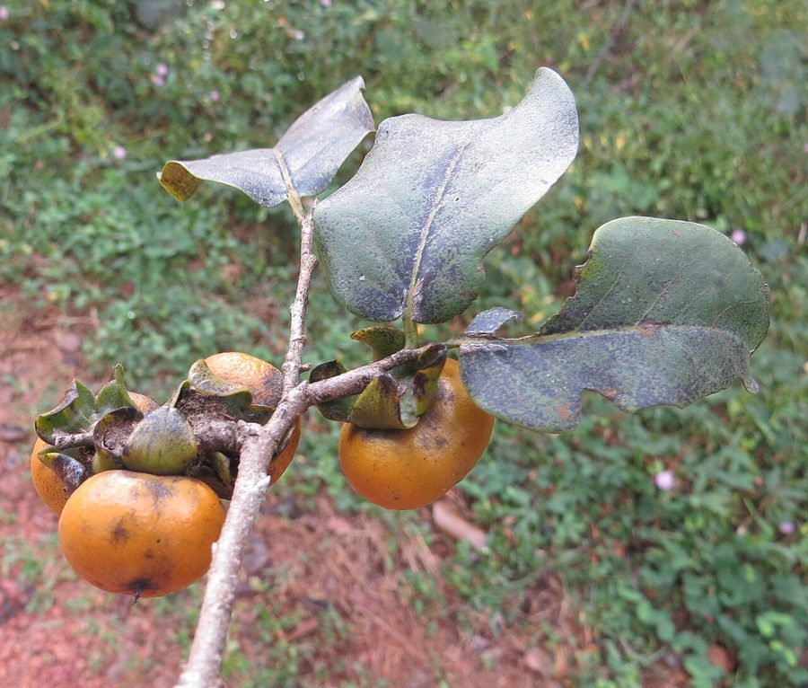

माउंटेन पर्सिमनMountain Persimmon
Diospyros montana · Ebenaceae · FLR-0355

- Scientific name वैज्ञानिक नाम
- Diospyros montana Roxb.
- Family कुल
- Ebenaceae
- Hindi हिंदी
- माउंटेन पर्सिमन
- Local names स्थानीय नाम
- mountain persimmon, maunten persiman, bistendu
- Status here यहाँ की स्थिति
- native
- Movement आवागमन
- Resident, here all year
- Known from कहाँ दर्ज
- Others have published records from the wider Awadh–Purvanchal plain, none yet from Basti–Ayodhya अवध–पूर्वांचल से दूसरों के प्रकाशित अभिलेख, बस्ती–अयोध्या से अभी नहीं
- IUCN IUCN
- not evaluated
- Review समीक्षा
- not yet reviewed
When to look कब देखें
Present all year. साल भर मौजूद।
Uses and possibilities उपयोग और संभावनाएँ
Drawn from the documented uses in the profile below, where each is labelled traditional, current or a research lead. All uses →
Tell it apart from इनसे अलग पहचानें
माउंटेन पर्सिमन / Mountain Persimmon
Diospyros montana Roxb. — Ebenaceae
माउंटेन पर्सिमन — यह मध्य और उत्तर भारत के सूखे वनों में पाया जाने वाला तेंदू कुल का एक छोटा से मध्यम आकार का कांटेदार पेड़ है। इसके तने और पुरानी शाखाओं पर अक्सर मजबूत कांटे निकले होते हैं। इसके पत्ते चिकने और गहरे हरे होते हैं, और गर्मियों में इस पर गोल पीले-भूरे फल लगते हैं जो पकने पर कड़वे व कसैले होते हैं। ग्रामीण इलाकों में इसे बिस्तेंदू भी कहते हैं क्योंकि इसके फल मवेशियों और इंसानों के लिए जहरीले माने जाते हैं।
Quick Identification त्वरित पहचान
| Feature | Description |
|---|---|
| Habit | Small to medium-sized deciduous tree with dark grey rough bark and often spine-tipped branchlets |
| Foliage | Alternate, ovate-oblong or elliptic, softly pubescent when young, glabrous when mature |
| Flowers | Small dioecious greenish-white or creamy flowers; male in small cymes, female solitary |
| Fruit | Globose berry seated upon an enlarged four-lobed calyx, ripening to yellow or reddish-brown |
| Taste | Intensely bitter and astringent pulp, considered toxic to domestic livestock |
| Field mark | Often armed with stout spinous branches; globose bitter persimmon fruit supported by persistent calyx |
Field tip: Look in dry thorn scrub, rocky embankments, and ravine woodlands for a small tree with dark rough bark and spines on the trunk, bearing round yellow marble-like persimmons sitting on a persistent four-cleft calyx.
हिंदी: इस पेड़ के तने पर मजबूत कांटे होते हैं और छाल काली-भूरी होती है। इसके गोल फल पकने पर पीले या हलके लाल हो जाते हैं और उनके नीचे चार पत्तियों वाला सूखा कटोरा सा लगा रहता है।
Morphology आकारिकी
| Measurement | Range |
|---|---|
| Seeds per fruit | 2–8 (Hooker 1882) |
Diospyros montana grows into a small to medium-sized deciduous tree reaching a variable stature with an irregular crown. The trunk and larger branches frequently carry stout, straight, often branched spines, especially on younger growth and coppice shoots. The bark is dark grey, rough, and thinly scaly.
The leaves are alternate, ovate-oblong or elliptic, obtuse or subacute at the apex, rounded or cordate at the base, and thin in texture. The species is dioecious. Male flowers are borne in small three-flowered or few-flowered axillary cymes. Female flowers are solitary, drooping, larger than the male, with four spreading calyx lobes. The fruit is a globose berry supported by an enlarged persistent calyx with four spreading lobes, containing compressed seeds embedded in bitter pulp without ruminated albumen.
हिंदी: पेड़ की टहनियों पर कांटे होते हैं। नर और मादा फूल अलग-अलग पेड़ों पर लगते हैं। फल गोल होता है जिसके अंदर दो से आठ तक चपटे बीज होते हैं और उसका गूदा बहुत कड़वा होता है।
Behaviour & Ecology व्यवहार और पारिस्थितिकी
The mountain persimmon is well adapted to dry tropical environments, thriving on shallow skeletal soils, dry sandstone slopes, and eroded ravine systems. Its spinous branches protect inner foliage and shoots from intense browsing pressure by wild ungulates and domestic goats.
The tree sheds its leaves at the start of the dry season, leafing out again with soft pinkish or light green flushes in spring. The flowers are insect-pollinated, visited by small halictid bees and diurnal beetles. The bitter saponin-rich pulp of the fruit deters herbivores, but once fully mellowed or dried, fruits are consumed by omnivorous mammals such as civets and jackals that disperse the seeds.
हिंदी: यह पौधा कड़ी धूप और सूखी जमीन पर भी हरा-भरा रहता है। इसके कांटे बकरियों और जानवरों से इसकी रक्षा करते हैं। इसके पके फल जमीन पर गिरने के बाद कस्तूरी बिलाव और सियार जैसे जानवर खाते हैं।
Life Cycle / Phenology जीवन चक्र
Foliage begins falling in late autumn, and the tree remains partially or fully bare through the mid-winter cold. New leaf flushes emerge in March and April alongside flower buds.
Flowering continues from April into May. Fruit development proceeds slowly through the summer and monsoon months, with the berries attaining full size by late rains. The fruit matures and ripens to yellowish or reddish-brown in autumn and early winter, hanging on the branches after leaf fall. Germination takes place in the following monsoon.
हिंदी: जाड़े में पत्ते गिर जाते हैं और चैत-बैसाख में नई पत्तियां और फूल आते हैं। फल बरसात भर धीरे-धीरे बढ़ते हैं और क्वार-कार्तिक में पककर पीले-भूरे हो जाते हैं।
Associated Species / Interactions सहजीवी प्रजातियाँ
Diospyros montana serves as a recorded larval host plant for the Common Baron (Euthalia aconthea), whose cryptic caterpillars feed on its foliage in deciduous forests.
Fallen fruits are consumed by nocturnal mammalian foragers such as the Common Palm Civet (Paradoxurus hermaphroditus), which pass the hard seeds in their scats. In dry woodland tracts it occurs alongside Tendu (Diospyros melanoxylon) and Ber (Ziziphus mauritiana).
हिंदी: कॉमन बैरन तितली के कैटरपिलर इसके पत्तों पर पलते हैं। कस्तूरी बिलाव (पाम सिवेट) रात में इसके गिरे हुए फल खाता है और उसके मल से नए स्थानों पर बीज उगते हैं।
Pests and Diseases कीट और रोग
Foliage is susceptible to leaf-spot fungi (Cercospora diospyri) which create small dark circular lesions on mature leaves during warm humid monsoon weather. Defoliating loopers and microlepidopteran leaf tiers attack young spring flushes.
Wood of dying or injured branches is targeted by dry-wood borer beetles. Domestic livestock avoid the bitter toxic leaves and fruits, which spares the plant from heavy pastoral grazing damage.
हिंदी: बरसात के दिनों में पत्तियों पर काले-भूरे धब्बे लग सकते हैं। कुछ सूंडियां पत्तों को लपेटकर खाती हैं, लेकिन कड़वे स्वाद के कारण बकरियां और गायें इसे नहीं छूतीं।
Agricultural / Human Relevance कृषि प्रासंगिकता
Diospyros montana is historically known across rural Uttar Pradesh as bistendu (poison tendu) because the bitter pulp of its fruit and bark infusions possess toxic and piscicidal properties, traditionally used to stun fish in stagnant pools.
The wood is greyish-white, hard, and close-grained, occasionally used for small domestic articles, fuel, and walking sticks, though not comparable to commercial ebony. Traditional systems document the external application of root and bark paste for boils, scorpion stings, and skin diseases; this is a record of traditional use, not medical advice.
Traditional: Bark and fruit paste used as a local fish stupefier; wood used for rustic agricultural handles.
Today: Retained in dryland shelterbelts and soil-conservation enclosures in ravine habitats.
Research direction (a lead, not a result): Isolation of diospyrin naphthoquinones for antimicrobial and antiparasitic screening.
हिंदी: इसे बिस्तेंदू कहा जाता है क्योंकि इसके फल में विषैला तत्व होता है। पहले इसका उपयोग भी पानी में मछली बेहोश करने के लिए किया जाता था। बिच्छू के डंक और फोड़े-फुंसियों पर इसकी जड़ का लेप लगाने की पुरानी परंपरा है।
Expected Locally स्थानीय रूप से अपेक्षित
Not a field record. Written from published accounts for eastern Uttar Pradesh. No confirmed local sighting yet — if you have seen it, that is what the atlas needs.
अभी तक स्थानीय पुष्टि नहीं। यह विवरण प्रकाशित स्रोतों से है, किसी अवलोकन से नहीं।
In eastern Uttar Pradesh, Diospyros montana should be sought on dry ravine slopes, remnant open woodland patches, and rocky scrub margins in Ayodhya, Basti, and Ambedkar Nagar districts. GBIF holds published records from the wider Awadh–Purvanchal plain, none yet from Basti–Ayodhya. A confirmed local record requires a dated photograph showing diagnostic floral or vegetative features submitted through the project portal.
हिंदी: पूर्वांचल के बीहड़ी और सूखे इलाकों में इस पेड़ के होने की संभावना है। यदि कांटेदार तने वाला ऐसा छोटा पेड़ और उस पर लगे गोल तेंदू जैसे फल दिखें, तो उसकी तस्वीर जरूर भेजें।
Distribution वितरण
Global range: Native to South and Southeast Asia and northern Australia, occurring in India, Sri Lanka, Nepal, Myanmar, Thailand, Indochina, Malaysia, Indonesia, and tropical Australia.
In India: Widely distributed in the sub-Himalayan tract, the dry deciduous forests of the Gangetic plain, central India, and the Western and Eastern Ghats.
In Uttar Pradesh: Recorded from the Siwalik tracts, Rohilkhand, Oudh, Bundelkhand, and the Vindhyan forest divisions.
In Basti district / eastern UP: Documented in regional floristic inventories for the plain; expected in scrubby woodlands and dry riverbank bluff habitats.
हिंदी: यह भारत, श्रीलंका से लेकर ऑस्ट्रेलिया तक पाया जाता है। उत्तर प्रदेश के सूखे जंगलों और बुंदेलखंड व अवध के बीहड़ों में यह स्वाभाविक रूप से उगता है।
Research Questions शोध प्रश्न
- Which nocturnal mammals are the primary seed dispersers of Diospyros montana in the Awadh scrub forests?
- How do local farmers and herdsmen distinguish bistendu from useful tendu when foraging in village wastelands? / गांव के लोग उपयोगी तेंदू और इस बिस्तेंदू में कैसे फर्क करते हैं?
- What is the concentration and variation of naphthoquinone compounds across different parts of the tree?
- How does the presence of stem spines influence browsing intensity by domestic goats in degraded commons?
- What are the germination requirements and dormancy mechanisms of seeds extracted from bitter fruit pulp? / इसके कड़वे बीजों को अंकुरित होने के लिए कितनी नमी और समय चाहिए?
हिंदी: क्या इस पेड़ के फलों का अर्क प्राकृतिक कीटनाशक के रूप में इस्तेमाल किया जा सकता है? इसकी कांटेदार बनावट जंगलों को बचाने में कितनी उपयोगी है?
Similar Species मिलती-जुलती प्रजातियाँ
| Species | How to tell apart | हिंदी | |
|---|---|---|---|
| [[tendu | Diospyros melanoxylon]] | Unarmed mature tree; leaves larger and thicker with prominent reticulation; fruit edible and sweet | तेंदू |
| [[ber | Ziziphus mauritiana]] | Paired nodal spines, alternate oval three-nerved leaves with white-tomentose undersides | बेर |
Field rule: Spiny trunk and branches, thinner leaves, and globose bitter persimmons on an enlarged four-lobed calyx separate Diospyros montana from the unarmed, larger-leaved Diospyros melanoxylon.
हिंदी: बीड़ी बनाने वाले आम तेंदू के पेड़ पर कांटे नहीं होते और उसका फल मीठा होता है, जबकि माउंटेन पर्सिमन (बिस्तेंदू) पर कांटे होते हैं और इसका फल कड़वा होता है।
Taxonomy & Classification वर्गीकरण
Original description. Described by William Roxburgh in 1795 in Plants of the Coast of Coromandel, Vol. 1, p. 37, t. 48.
Subspecies. Monotypic — no subspecies are currently recognised in northern India.
Family and order placement. Placed in the family Ebenaceae, order Ericales.
Phylogenetic notes. Diospyros is the largest genus in Ebenaceae, characterised by dioecy, persistent fruiting calyces, and wood rich in dark polyphenols.
IUCN status rationale. Not evaluated by the IUCN Red List (not_evaluated). The species possesses a vast geographic range and abundant wild populations across South Asia.
हिंदी: यह एबेनेसी कुल का सदस्य है जिसे आबनूस (एबोनी) कुल भी कहा जाता है। यह पेड़ भारत के कई राज्यों में प्रचुरता से पाया जाता है।
Photo Gallery फोटो गैलरी
No photos yet — add field photos to media/species/mountain_persimmon/ and run node scripts/sync_photos.js.
Photos needed आवश्यक फोटो
- [ ] Trunk and branches showing stout spines and rough dark bark (कांटेदार तना और छाल)
- [ ] Male or female flowers showing floral structure (छोटे सफेद-क्रीम फूल)
- [ ] Globose yellow-brown persimmon fruit seated on four-lobed calyx (डाल पर लगा गोल फल)
- [ ] Cross-section of ripe fruit showing internal seeds and pulp (फल का कटा हुआ भाग और बीज)
References संदर्भ
- Roxburgh, W. (1795). Plants of the Coast of Coromandel, Vol. 1, p. 37, t. 48.
- Hooker, J. D. (1882). The Flora of British India, Vol. 3. L. Reeve & Co., London.
- Duthie, J. F. (1903). Flora of the Upper Gangetic Plain, and of the Adjacent Siwalik and Sub-Himalayan Tracts, Vol. 1. Office of the Superintendent of Government Printing, Calcutta.
- Brandis, D. (1906). Indian Trees: An Account of Trees, Shrubs, Woody Climbers, Bamboos and Palms Included in the Indian Empire. Archibald Constable & Co., London.
- Kirtikar, K. R. & Basu, B. D. (1933). Indian Medicinal Plants, 2nd ed. Lalit Mohan Basu, Allahabad.
- GBIF Occurrence Data — Diospyros montana, India (2025).
Source file: species/flora/trees/mountain_persimmon.md